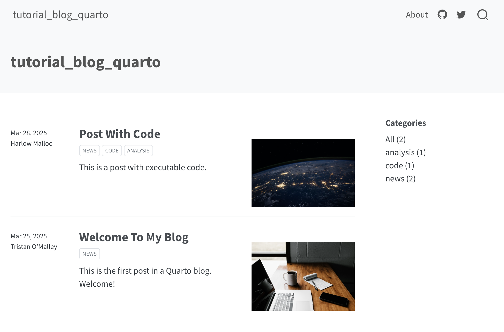
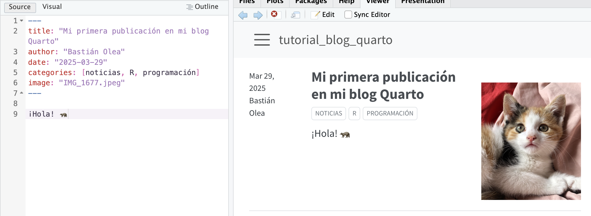
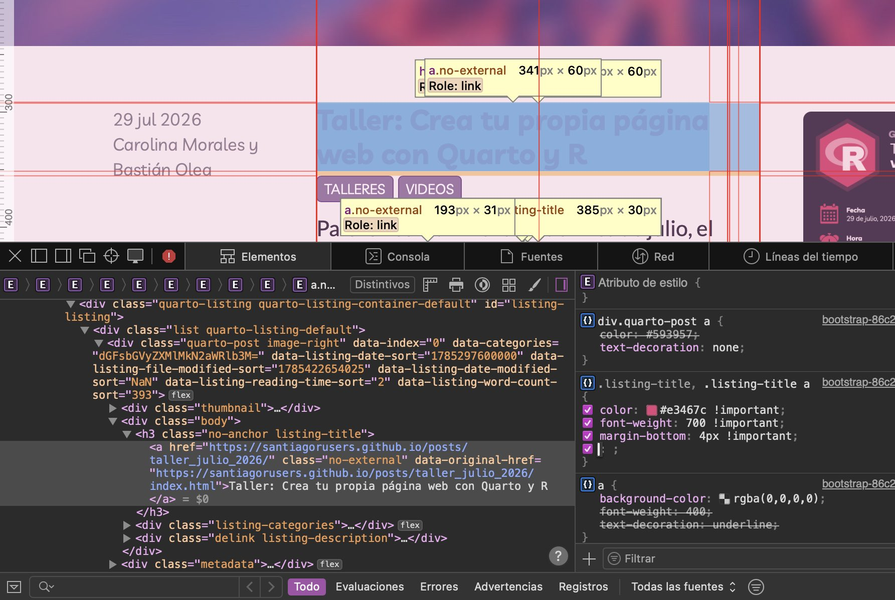
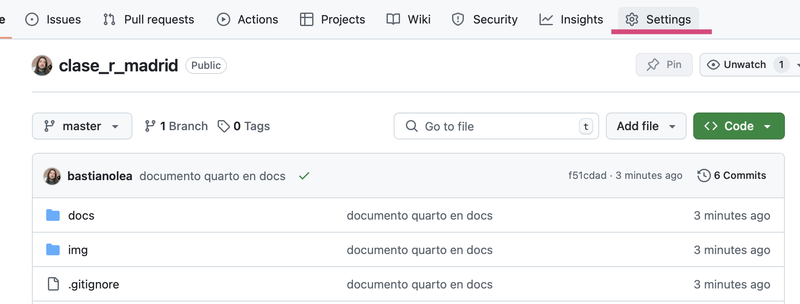

Este tutorial es la versión en texto1 del taller que dictamos en vivo para el Grupo de Usuari@s de R de Santiago el 29 de julio de 2026, ante más de 50 personas de toda Latinoamérica. Muchas gracias a quienes participaron!
Tutorial publicado originalmente en el sitio web de Bastián Olea Herrera
En una época en que casi toda nuestra vida digital ocurre dentro de redes sociales y plataformas que no controlamos (y que pueden cerrar, bloquearte, o simplemente desaparecer), contar con un sitio web personal te permite reunir tus proyectos, aprendizajes y estudios en un lugar que no depende de nadie más que de ti.
Además, un blog te sirve para aprender haciendo, para armar un portafolio de tu trabajo, y para conectar con la comunidad de personas que usan R: seguramente todo lo que sabes de R lo aprendiste gracias a que alguien más compartió su conocimiento de forma abierta y gratuita, así que compartir lo que tú aprendes es una forma de devolver la mano!
Lo mejor es que armar un blog con Quarto, RStudio y GitHub Pages no cuesta nada!
En este tutorial armaremos un blog de principio a fin, lo personalizaremos, y lo publicaremos en internet, usando sólo herramientas gratuitas y de código abierto.
Herramientas
Para construir el blog necesitamos combinar cuatro herramientas, todas gratuitas:
- Quarto: sistema de publicación que transformará nuestros documentos en páginas web. Quarto combina texto en formato Markdown con bloques de código de R (u otros lenguajes), y también puede generar como resultado documentos PDF, documentos Word, sitios web, blogs, libros y diapositivas.
- RStudio: el entorno de desarrollo (IDE) donde vamos a escribir el contenido del blog.
- Git: un sistema de control de versiones que registra los cambios que hacemos a nuestros archivos a través del tiempo.
- GitHub y GitHub Pages: una plataforma online donde subiremos nuestro proyecto, y que además nos permite publicarlo como una página web gratis.
Quarto es el sucesor de R Markdown: si ya conoces R Markdown, la sintaxis de Quarto te va a resultar prácticamente idéntica.
Ejemplos de blogs Quarto
Algunos sitios web hechos con Quarto:
- santiagorusers.github.io, el sitio del Grupo de Usuari@s de R donde se dictó este taller!
- quarto.org, el sitio de documentación de Quarto
- nrennie.rbind.io
- emilhvitfeldt.com
- brodrigues.co
Configurar Git y GitHub
Como vamos a publicar nuestro blog a través de GitHub, el primer paso es tener Git andando, y preparar nuestra cuenta y conectarla con RStudio.
Si ya usas Git y GitHub con R, puedes saltarte esta sección. Si no sabes nada de esto, puedes verlo en detalle en esta publicación.
Git es un software de código abierto que instalas en tu computador para llevar un registro de las versiones de tu código: cada vez que guardas un avance (un commit), Git recuerda ese estado de tus archivos, de modo que siempre puedes volver atrás o ver qué cambió.
GitHub es una plataforma online donde se pueden subir esos repositorios de Git, de forma que otras personas puedan ver tu código, descargarlo, y colaborar contigo. GitHub Pages, que usaremos más adelante, es una funcionalidad de GitHub que además te permite publicar un sitio web a partir de los archivos de tu repositorio.
Si quieres profundizar en Git y GitHub más allá de lo necesario para este tutorial, revisa mi tutorial de Git y GitHub para R, o el libro Happy Git and GitHub for the useR.
Configurar cuenta GitHub
Todo el proceso se simplifica muchísimo gracias al paquete {usethis}, que automatiza varias tareas repetitivas de configuración:
install.packages("usethis")Ahora registramos cuál es nuestra cuenta de GitHub (nombre de usuario y correo):
usethis::use_git_config(user.name = "tu_usuario", user.email = "tu_correo@ejemplo.com")Así tu computadora sabrá cuál es tu cuenta de GitHub!
Autenticar cuenta GitHub
Para que RStudio pueda interactuar con tu cuenta de GitHub (subir archivos, crear repositorios, etc.), necesitas un token de acceso personal, que es como una contraseña, pero más segura porque no necesitas aprenderla, y puedes revocar el acceso cuando quieras desde tu cuenta de GitHub.
Con el siguiente comando, se abrirá una ventana en tu navegador para generar el token, y tienes que copiarlo.
usethis::create_github_token()Luego, ejecuta lo siguiente y pega el token cuando la consola te lo pida:
gitcreds::gitcreds_set()De esta forma habrás registrado tu cuenta GitHub con tu RStudio de manera segura!
Para revisar que la configuración quedó bien, puedes correr un diagnóstico:
usethis::git_sitrep()El mensaje debería decirte tu cuenta de GitHub y que encontró el token de acceso. Si tienes dudas o problemas, revisa esta publicación.
Crear el blog
Con Git y GitHub configurados, ya podemos crear el proyecto de nuestro blog! Es probable que tengas que instalar Quarto primero:
install.packages("quarto")En RStudio, vamos a File → New Project → New Directory → Quarto Blog:

Elige un nombre para tu proyecto (será también el nombre de la carpeta y, más adelante, parte de la dirección web de tu blog, así que piensa bien!) y crea el proyecto. RStudio abrirá una nueva sesión con varios archivos ya generados.
Estructura de archivos
Un blog Quarto recién creado viene con esta estructura:
mi-blog/
├── _quarto.yml # configuración general del sitio
├── index.qmd # página principal (listado de publicaciones)
├── about.qmd # página "sobre ti"
├── profile.jpg # tu foto, usada en la página about
├── styles.css # hoja de estilos para personalizar el blog
└── posts/
├── welcome/
│ └── index.qmd
└── post-with-code/
└── index.qmdindex.qmd: la página principal. En un blog, por defecto es el listado de publicaciones, aunque puedes cambiarla por cualquier otro contenido.about.qmd: tu página de presentación personal, donde puedes poner tu biografía, una foto tuya, tus enlaces, etc.profile.jpg: la imagen de perfil que aparece en tu página about (puedes reemplazarla por tu propia foto).
posts/: la carpeta donde viven tus publicaciones. El proyecto viene con dos publicaciones de ejemplo._quarto.yml: archivo de configuración del sitio completo: título, descripción, menú de navegación, temas, etc.styles.css: hoja de estilos donde más adelante agregaremos personalización visual.
Cada archivo .qmd corresponde a una página de tu sitio.
Previsualizar y construir el sitio
Hay dos operaciones distintas que vamos a usar todo el tiempo en el blog: previsualizar y renderizar.
- Previsualizar con
quarto previewoquarto::quarto_preview(): levanta un servidor local que va actualizando la vista previa automáticamente cada vez que guardas cambios. Es lo que usamos mientras estamos escribiendo y probando. - Renderizar con
quarto renderoquarto::quarto_render(): reconstruye el sitio completo, generando todos los archivoshtmlfinales. Es el que debes ejecutar antes de publicar, para asegurarte de que todo el sitio (no solo la página en la que estabas trabajando) quede actualizado.
Puedes ejecutar ambos desde la pestaña Terminal de RStudio, o su equivalente en R:
quarto preview
quarto renderquarto::quarto_preview()
quarto::quarto_render()También puedes simplemente presionar el botón Render en la barra superior del editor para previsualizar la página en la que estás trabajando.
Deberías ver una página más o menos así:

Escribe tu primera publicación
Cada publicación de tu blog es una carpeta dentro de posts/, que contiene un archivo index.qmd. El nombre de la carpeta determina la dirección web de la publicación, así que debes usar nombres sin espacios, sin mayúsculas, y separados por guiones, por ejemplo:
posts/mi-primer-post/index.qmdPuedes crear esta carpeta y el archivo manualmente, o usar la función que provee el paquete {quarto}:
quarto::new_blog_post(title = "Mi primer post")Siguiendo este ejemplo, Quarto crearía la carpeta posts/mi-primer-post/, y dentro un archivo index.qmd con el título provisto.
Encabezado de la publicación
Al comienzo de cada publicación va un bloque de metadatos en formato yaml, delimitado por tres guiones al inicio y al final:
---
title: "Mi primer análisis en R"
subtitle: "Analizando datos sociales mediante programación"
author: "Tu nombre"
date: "2026-08-06"
categories: [R, análisis, datos]
image: "imagen.jpg"
---En este bloque vamos a configurar cada publicación:
titleysubtitle: título y subtítulo de la publicación.date: fecha de publicación, en formatoAAAA-MM-DD. Con esta fecha, Quarto ordena tus publicaciones en el listado del blog.categories: etiquetas que agrupan tus publicaciones, y que aparecerán como filtros en el listado del blog.image: una imagen destacada para la publicación (debe estar en la misma carpeta que elindex.qmd).
Si Quarto te muestra un error relacionado al front matter del documento, se refiere a este encabezado, así que revisa que el bloque
yamlesté bien cerrado.
Una vez que le das Render a tu publicación, puedes previsualizarla en el panel Viewer de RStudio, o en una ventana aparte:

Puedes configurar dónde ver la previsualización del blog en el ícono de engranaje al lado de Render
Sintaxis Markdown básica
El contenido de tus publicaciones se escribe en Markdown, un lenguaje de marcado simple que usa símbolos de texto plano para dar formato a tu contenido:
## Subtítulo
### Subsubtítulo
**negrita**
_itálica_
<u>subrayado</u>
~~tachado~~
[Enlace](https://enlace.cl)

Una nota al pie[^1].
[^1]: Contenido de la nota.La lógica de Markdown es separae el contenido del estilo: tu solamente te preocupas de escribir y estructurar tu texto, mientras que la apariencia (tamaños de letra, colores, tipografías) se definirá aparte, como veremos más adelante.
Si necesitas aprender lo básico de Quarto y Markdown, revisa el tutorial de reportes con Quarto.
Código de R en las publicaciones
Una de las gracias de Quarto es que puedes incluir código de R directamente en tus publicaciones, y que se ejecute al momento de generar el sitio. De esta forma puedes agregar cualquier cosa que hagas en R a tu blog: gráficos, tablas personalizadas, mapas interactivos, y más.
Para agregar un bloque de código (también llamado chunk), se delimita con tres comillas invertidas seguidas del lenguaje entre llaves:
```{r}
1 + 1
```También puedes agregar un bloque con el botón verde al lado derecho de Render.
Al comienzo del bloque puedes agregar opciones, que empiezan con #|:
#| echo: false: oculta el código, mostrando solo el resultado.#| eval: false: muestra el código, pero no lo ejecuta.#| warning: falsey#| message: false: oculta advertencias y mensajes (útil, por ejemplo, cuando cargas un paquete como{dplyr}, que suele imprimir mensajes que no quieres que aparezcan en tu blog).#| fig-height: 7: define el alto de los gráficos generados en el bloque.
Por ejemplo, en este bloque se omitirán los mensajes y alertas de R:
```{r}
#| message: false
#| warning: false
library(dplyr)
```En este bloque se omitirá el código, y se mostrará solamente el output del código:
```{r}
#| echo: false
1 + 1
```Todos los bloques de código de una misma publicación comparten el mismo entorno: si creas un objeto en un bloque, puedes usarlo en cualquier bloque posterior. Así que puedes cargar todos tus paquetes en un bloque al principio del documento, o procesar datos en un bloque y hacer el output en otro bloque, por ejemplo.
Código como parte del texto
Además, puedes insertar resultados de R directamente dentro de un párrafo, con la sintaxis `{r} codigo`; es decir, una comilla invertida seguida de r dentro de corchetes, luego el código, y cerrar con otra comilla invertida.
De esta forma puedes integrar cifras o textos directamente en los párrafos de tu post, e incluso en sus títulos, por ejemplo para que el texto cite una cifra exacta, o que una palabra en tu publicación dependa de un resultado anterior.
Por ejemplo, calculemos la correlación entre el largo y ancho de los pétalos en los datos iris:
```{r}
#| echo: false
correlacion <- cor(iris$Petal.Length, iris$Petal.Width) |> round(2)
```Guardamos el resultado en un objeto llamado correlacion, y luego podemos escribir un párrafo como el siguiente:
La correlación entre el largo y el ancho de los pétalos es de
{r} correlacion.
Cuando ejecutes la publicación, el resultado se verá así:
La correlación entre el largo y el ancho de los pétalos es de 0.96.
El número 0.96 se generó en el momento de renderizar la publicación, a partir del código, en vez de haber sido escrito a mano, entonces, si tus datos cambian o si cambias el código, el texto se actualiza solo, sin que tengas que ir editando números a mano cada vez.
Personalización
Hasta ahora creamos un blog aburrido por defecto, pero todos los aspectos del blog son personalizables, así que podremos darle algo de nuestra personalidad a nuestros sitios web.
El aspecto general de tu sitio se controla desde el archivo _quarto.yml, que está en la raíz de tu blog.
Cambiar el tema
Puedes elegir entre distintos temas predefinidos, que puedes ver en la página de Bootswatch.
Cuando veas uno que te guste, simplemente anota su nombre en el archivo _quarto.yml, debajo de html, en el argumento theme (si no existe, agrégalo):
format:
html:
theme: lux # nombre del tema que vas a aplicar
css: styles.cssLuego, ejecuta quarto::quarto_render() para actualizar tu sitio completo al tema nuevo.

Puedes ver la lista completa de temas disponibles en esta guía de Quarto.
Estilos SCSS
Si quieres ir más allá de los temas predefinidos, puedes crear un archivo .scss propio con variables de estilo. Primero, lo agregamos junto al tema base en _quarto.yml:
format:
html:
theme:
- minty
- tema.scssLuego creamos un archivo llamado tema.scss en la raíz del blog, que como mínimo debe incluir el texto /*-- scss:defaults --*/ en la parte superior.
Diferencia entre SCSS y CSS
CSS (Cascading Style Sheets) es el lenguaje estándar para dar estilo a páginas web: defines reglas como “los títulos van en azul” o “el fondo es gris”. SCSS es una extensión de CSS que agrega funcionalidades útiles, como las variables (puedes definir $color-principal: #4a5759 una vez y reutilizarla en todo el archivo, en vez de repetir el código del color cada vez). Quarto convierte el SCSS a CSS automáticamente al renderizar. La idea es que con SCSS puedes cambiar colores y tipografías de todo tu blog modificando solo unas pocas variables, en vez de buscar y reemplazar valores repetidos por todo el archivo.
SCSS hace todo lo que hace CSS, y le agrega funcionalidades extra, así que todo lo que normalmente hacemos en un archivo .css podemos hacerlo en el .scss.
Colores del blog
Dentro de tema.scss, puedes definir variables de color, tipografía y más.
Definiendo las siguientes variables podrás cambiar la apariencia casi completa del blog en unas pocas líneas:
/*-- scss:defaults --*/
$primary: #b0c4b1;
$secondary: #4a5759;
/* colores principales */
$body-bg: #dedbd2; // fondo
$body-color: #4a5759; // texto
$link-color: #b0c4b1; // enlaces
$border-color: #c7c3b7; // líneas
/* barra de navegación */
$navbar-bg: #4a5759; // fondo
$navbar-fg: #dedbd2; // textoPuedes buscar paletas de colores y sus códigos hexadecimales en sitios como coolors.co.
Otras variables frecuentes que puedes modificar: - $font-size-root para tamaños del texto - $h1-font-size para tamaño de los títulos - $line-height-base para interlineado del texto - $toc-color para el color de los índices
Puedes ver la lista de variables SASS más comunes o todas las variables disponibles.
Tipografías
La tipografía de tu blog es una forma de presentar su personalidad y expresarle a tus lectores/as ciertos conceptos que quieres asociar con tu contenido.
Para cambiar la tipografía de tu blog:
- Busca una fuente en Google Fonts.
- Selecciona la tipografía y presiona Get font, luego Get embed code.
- Copia la línea
@import. - Pégala en tu
tema.scss, y aplícala con las variables correspondientes:
@import url('https://fonts.googleapis.com/css2?family=Raleway:ital,wght@0,100..900;1,100..900&display=swap');
$font-family-sans-serif: "Raleway", sans-serif;
h1, h2, h3, h4, h5 {
font-family: "Raleway", sans-serif;
}Usualmente se recomenda mezclar pares tipográficos en tu sitio web, tradicionalmente una tipografía serif para los títulos y una sans-serif para el cuerpo del blog (por ejemplo, como hago yo en este blog). Pero también puedes elegir solo una tipografía y aplicarla a todo.
Personalización avanzada
Literalmente todo en el blog puede ser pesonalizado, pero para ello necesitas saber cómo se llama cada elemento. Para averiguarlo, abre tu blog en tu navegador (presiona el botón de ventanita en la ventana de Viewer de RStudio para abrirlo en tu navegador), y usa el inspector de tu navegador: clic derecho sobre cualquier elemento de tu sitio, y elige Inspeccionar elemento. Ahí puedes ver qué clase css tiene ese elemento, y probar cambios de estilo en vivo antes de aplicarlos definitivamente.
Por ejemplo, en este blog puse Inspeccionar sobre el título de los posts en la lista de posts, y veo que la clase es .listing-title.

Entonces, si quiero cambiar el color de ese texto, puedo agregar algo como lo siguiente a tema.scss:
.listing-title {
color: #583957 !important;
}Le agregamos !important para que esta regla nueva aplique por sobre otras reglas que puedan existir.
Estos conocimientos esotéricos sobre CSS son muy útiles para el web scraping!
Preparar el sitio para subirlo
Antes de subir tu blog a GitHub, necesitamos dos ajustes para que GitHub Pages sepa qué archivos publicar.
Primero, en _quarto.yml, agregamos output-dir: docs bajo project, para que el sitio se construya en una carpeta llamada docs:
project:
type: website
output-dir: docsEsto es porque Quarto construye un sitio web estático dentro de una carpeta, y esa carpeta es lo que contiene todo lo que será visible del sitio. Por defecto, esta carpeta es _site, pero queremos que sea docs.
Luego ejecutamos quarto::quarto_render() para actualizar el sitio, y si queremos podemos eliminar la carpeta anterior, _site.
Segundo, creamos un archivo vacío llamado .nojekyll en la raíz del proyecto. Esto le indica a GitHub Pages que no debe procesar tu sitio con Jekyll (su generador de sitios por defecto), porque tú ya lo generaste con Quarto:

Crear el repositorio local
Con el sitio preparado y GitHub configurado, ahora creamos el repositorio local y lo subimos a GitHub:
usethis::use_git()Este comando inicializa el repositorio de Git en tu proyecto, y te preguntará si quieres hacer commit de tus archivos (guardar la primera versión), así que respóndele que sí.
Subir el repositorio remoto
usethis::use_github()Este segundo comando crea un repositorio remoto en tu cuenta de GitHub, con el mismo nombre que tu proyecto, y sube tus archivos. Al finalizar, se abrirá una ventana del navegador mostrando tu repositorio ya en GitHub!
Si puedes ver el repositorio en GitHub, y el repo tiene la carpeta docs, está todo listo para el último paso!
Publicar el blog en GitHub Pages
Ya con el repositorio en GitHub, podemos configurar GitHub Pages.
Vamos a la pestaña Settings del repositorio:

En el menú de la izquierda, entramos a Pages. Ahí, en Build and deployment, seleccionamos la rama (branch) main, y la carpeta /docs, y presionamos Save:

Después de esperar uno o dos minutos, GitHub te mostrará la dirección donde tu sitio ya está publicado:

¡Y eso es todo! Tu blog ya está disponible en internet, en una dirección como https://tu_usuario.github.io/nombre-del-repositorio.
Una vez que tu sitio está arriba, la configuración está lista, y cada vez que actualices el repositorio remoto tu sitio web se actualizará en unos minutos.
Si renombras tu repositorio a
tu_usuario.github.io, tu sitio quedará disponible directamente enhttps://tu_usuario.github.io, sin el nombre del repositorio al final.
Actualizar el blog
Una vez publicado, actualizar tu blog (para agregar nuevas publicaciones, corregir textos, cambiar el diseño) sigue siempre el mismo flujo:
- Haces los cambios que quieras en RStudio (nueva publicación, modificación de configuraciones, temas, etc.).
- Ejecutas
quarto::quarto_render()para reconstruir el sitio completo. - Subes los cambios a GitHub desde la pestaña Terminal (al lado de la pestaña de la Consola:
- Registra los cambios locales con
git add .para que tus archivos modificados sean identificados - Guarda una versión de tus modificaciones con
git commit -m "mensaje", con un mensaje descriptivo de los cambios - Sube los cambios al repositorio remoto GitHub con
git push
- Registra los cambios locales con
En resumen, ejecutar estos tres comandos en la pestaña Terminal:
git add .
git commit -m "agrego nueva publicación"
git pushCon git add . marcamos todos los archivos modificados para guardar, con git commit creamos una nueva versión con un mensaje descriptivo, y con git push subimos los cambios a GitHub. En un par de minutos, tu sitio se actualizará solo con los cambios.
Si prefieres no usar la terminal, RStudio también tiene un panel Git (junto a Environment e History) desde el cual puedes hacer exactamente lo mismo con clics en vez de comandos.
Preguntas frecuentes
¿Esto es gratis? Quarto, RStudio, Git y GitHub Pages son gratuitos!
¿Alguien puede copiar o “robar” mi código? El código de tu sitio queda público, y también el código que usas para construir tus publicaciones. Esto incluye los datos, si es que llegas a subirlos a las carpetas de tu blog. Evita subir información que no quieras que sea pública (contraseñas, llaves de API, datos sensibles o privados, etc.). GitHub Pages gratuito no funciona sobre repositorios privados, aunque existen alternativas. Si necesitas usar datos privados, o muy pesados, siempre puedes cargarlos desde ubicaciones externas a tu blog para que tus documentos Quarto los reciban, pero no se suban a tu blog.
Recursos
Tutoriales
Documentación
Notas
Disclaimer: este tutorial se escribió con apoyo del asistente de IA Posit Assistant. Para más información sobre la forma en que fue redactado en base a las transcripciones de voz, diapositivas y otros recursos, leer este post.↩︎